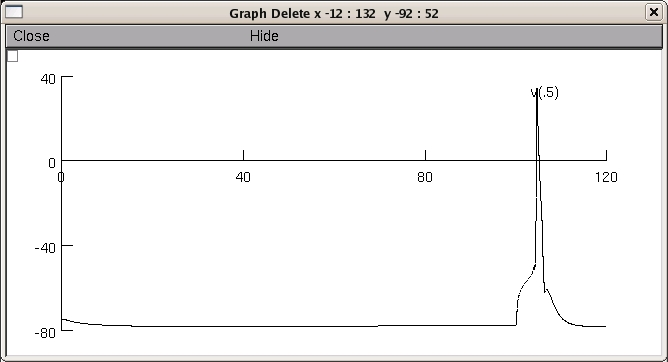

This is the readme for the model associated with the paper: Royeck M, Horstmann MT, Remy S, Reitze M, Yaari Y, Beck H (2008) Role of Axonal NaV1.6 Sodium Channels in Action Potential Initiation of CA1 Pyramidal Neurons. These model files were supplied by Dr Marie-Therese Horstmann. Usage: ------ Check that you have NEURON installed (available from http://www.neuron.yale.edu). Autolaunch from ModelDB **or** download and extract the archive and compile the mod files to run under ... linux/unix ---------- by typing nrnivmodl in the top level directory. Then type nrngui mosinit.hoc mswin ------- Run mknrndll, cd to the expanded directory and press make nrnmech.dll button. Double click on the mosinit.hoc file. MAC OS X -------- Drag and drop the expanded folder onto mknrndll icon in the NEURON application folder. Drag and drop the mosinit.hoc file onto the nrngui icon to start the simulation. Once the simulation is running: ------------------------------- Choose one of the first two buttons to either run a demo version (low resolution) of figure 11D (left) or a publication quality run. If you would like you can also run a short run that finishes a 2 ms simulation nearly instantaeously to verify that the model will run on your platform (in this case see the oc> prompt message that informs you that the test run has completed). In either of the first two button cases you should see an image that looks like this: 